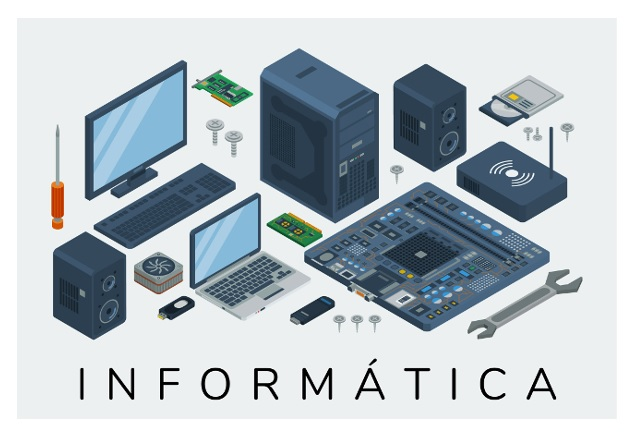
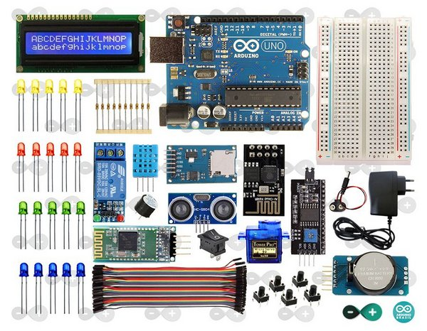

F.I.Fundamentos da Informatica
Uma das coisas mais importantes antes de iniciar uma carreira no mundo da informatica é conhecer seus fundamentos, e nos da Etec Zona Leste sabemos muito bem disso. Nesta matéria nossos estudantes fazem uma importante e emocionante viagem pela historia da informatica, conhecendo nosprieiros meses a origem das primeiras maquinas programaveis, entendem a evolução destas tecnologias, e assim entendem como chegamos a esse mundo computadorizado que viveos.

Nossos alunos são guiados (em duas turmas em laboratoios bem equipados) por dois exelentes professore, Carlos(Turma A) e Maria Emília(Turma B) que projetam eficiêntes projetos para o melhor aproveitamneto dos alunos, que tambem aprendem os conceitos de Virtualização, Computação em Nuvem, Arquitetura de Software e Harware e conhecem novos sistemas Operacionais, como as distribuições Linux.
Outra das grandes conquistas que nossos alunos alcansarão será o conhecimento das noções basicas de eletronica e programação para Arduíno, na qual os alunos são capazes de criar suas proprias maquinas, até mesmo introduzir robotica e criar projetos para a nossa feira Tecnologica onde empresas poderão ver seus projetos tambem.
